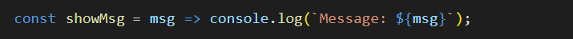

Learning Goals
At the end of this Tutorial, you will be able to:
- Create and call arrow functions.
- Use arguments and parameters to pass values to an arrow function.
- Write short-hand single-statement arrow functions with implicit returns.
In your javascript/exercises folder, create a new sub-folder named 10.
📄 Save the exercise file below to this new javascript/exercises/10 sub-folder.
About arrow functions
A so-called arrow function is a short-hand or quick way of typing an anonymous function expression.
Because arrow functions are always anonymous, you must assign them to a variable if you want to call them from elsewhere in the program.
You can convert a regular anonymous function to an arrow function as follows:
- Remove the function keyword. But leave the parentheses ().

- After the () and before the opening code block {, type an equals sign and a right arrow character =>

That's it. You have now created an arrow function.
Exercise 10.1: Displaying a message
Rewrite the anonymous function that displays a short message as an arrow function. Verify that the arrow function is not hoisted by calling the function before creating it.
Exercise 10.2: Joining two strings
Rewrite the anonymous declaration that joins the two strings as an arrow function.
Parameters and arguments
As with function declarations and expressions, you can pass values to an anonymous function. See the example below.


Exercise 10.3: Pass an argument when calling a function
Rewrite the anonymous function that passes a number as an arrow function.
Single-statement arrow functions
As with other anonymous functions, an arrow function can contain multiple lines of code and accept multiple parameters. See below.
As you can see, there are the usual parentheses ( ) around the input parameters and curly braces { } around the code block.
However, arrow functions are most commonly used for tasks that contain only a single statement. See below.
In such cases, you can:
- Write the arrow function on a single line.

- Omit the curly braces { } around the single-statement code block.
- Also, if the arrow function accepts only a single parameter, omit the parentheses ( ) around the parameter. 
Arrow functions and return values
Unlike other anonymous functions, arrow functions offer two ways of returning values to the calling program. These are explicit returns and implicit returns.
Explicit returns
If an arrow function contains multiple statements inside a code block { }, you must use the return keyword to return its value. This is called an explicit return. See below.

Implicit returns
However, when an arrow function contains just a single statement on one line without a code block { }, you can omit the return keyword. This is called an implicit return.
See the sample function below that multiples its input parameter by 2 and returns the result to the calling program.
- Arrow function with one input parameter and one statement written in long format.

- You can remove the ( ) around the single parameter.

- You can rewrite the function on a single line.

- Finally, you can also remove the code blocks { } and the return keyword.

Try copying-and-pasting the following arrow functions with one input parameter and implicit returns into a file and verify they all run correctly.
// squares the input parameter const squareNum = num => (num * num); const result1 = squareNum(4); console.log(result1); // divides input parameter by 2 const halfNum = num => (num / 2); const result2 = halfNum(25); console.log(result2); // adds 15 to price of product const increasePrice = num => (num + 15); const result3 = increasePrice(100); console.log(result3);
And here are some examples of single-statement arrow functions that accept multiple parameters.
// adds three numbers const addNums = (x, y, z) => (x + y + z); const result4 = addNums(4, 8, 16); console.log(result4); // divides one number by another const divideNum = (num1, num2) => (num1 / num2); const result5 = divideNum(100, 50); console.log(result5); // calculates product price after 20% tax const finalPrice = (price, tax) => (price + (price * tax)); const result6 = finalPrice(100, .20); console.log(result6);
Notice that, with arrow functions, the JavaScript syntax for declaring and initializing variables, and for creating function expressions, is very similar.
In both cases, the LHS of the assignment statement contains a variable type such as const and a variable name.
One difference is that, for arrow functions, the RHS of the assignment statement begins with the () => characters.
Another difference is that, unless the arrow function contains only one statement, the RHS will also contain code block braces {}.
Exercise 10.4: Return a value from a called function
Rewrite the anonymous function that calls a random number generator function as an arrow function.
Immediately-invoked arrow functions
You can amend the syntax of an arrow function, as with an anonymous function, so that it is run without being called from elsewhere in the program.
To invoke a function immediately, add a parentheses () at the end of the function, just before the semi-colon. See the example below.

Exercise 10.5: Create an immediately invoked function
Copy the function in exercise 10-1, rename it, and rewrite it as an immediately invoked arrow function.
Arrow function syntax
In the examples and exercises in this Tutorial, you have placed the arrow functions on the right-hand side (RHS) of assignment statements. Strictly speaking, in such cases, only the RHS contains the actual arrow function syntax. See the examples below.